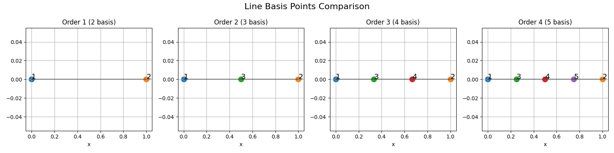
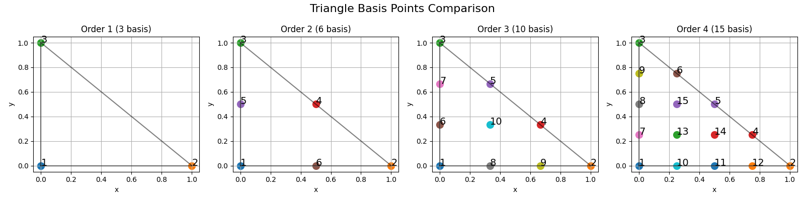
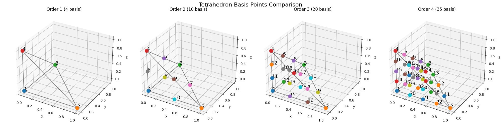
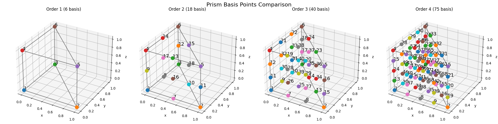
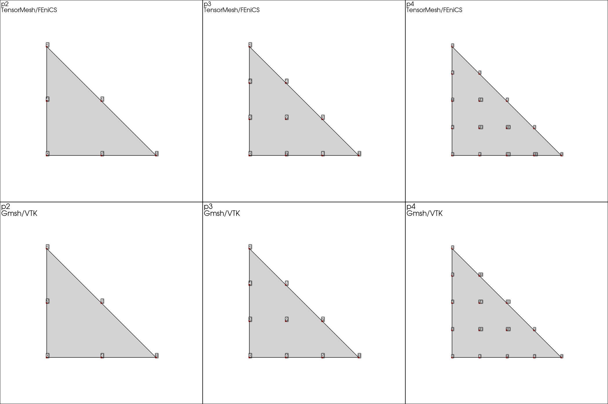
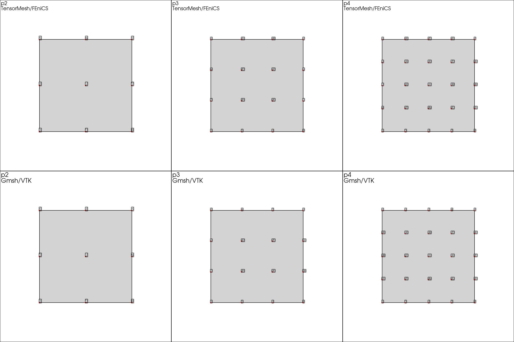
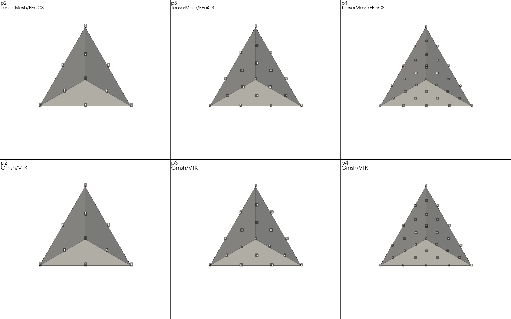
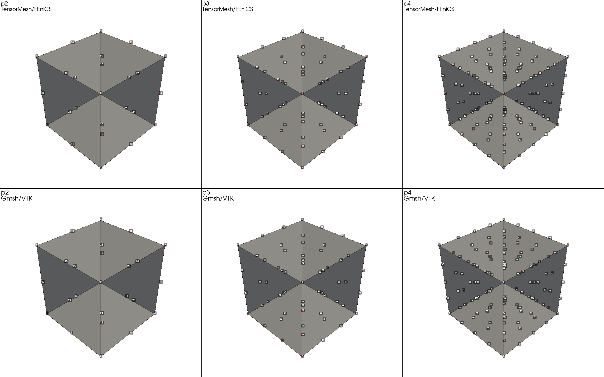

Basics & Visualization¶
Four short scripts in examples/basics/ that visualize the building
blocks of FEM in TensorMesh: where interpolation nodes sit on the
reference element, what the shape functions look like, how internal
node numbering compares to Gmsh / VTK, and what the mesh generators
produce. None of these scripts solve a PDE — they exist to make the
underlying objects tangible and to sanity-check the conventions used
elsewhere in the library.
If you are reading this page after the Elements and Quadrature user-guide page, treat these scripts as the picture book that goes with it.
Interpolation nodes¶
examples/basics/basis.py plots the spatial distribution of
interpolation (Lagrange) nodes on the reference element for all seven
element classes — Line,
Triangle, Quadrilateral,
Tetrahedron, Hexahedron,
Pyramid, Prism — at orders
1 through 4. The driver is a one-liner per element class:
from tensormesh.element import (
Line, Triangle, Quadrilateral,
Tetrahedron, Hexahedron, Pyramid, Prism,
)
for element in [Line, Triangle, Quadrilateral,
Tetrahedron, Hexahedron, Pyramid, Prism]:
for order in range(1, 5):
basis = element.get_basis(order) # [n_basis, dim]
# …scatter basis on the reference element…
The number of basis points grows quickly with order: \((p+1)^d\) for tensor elements, \(\binom{p+d}{d}\) for simplex elements. Knowing where they sit is the first sanity check when something goes wrong with a higher-order solve.
The seven panels below show the Lagrange-node layout for every
supported element class at orders 1–4. Each panel reads
left-to-right by order; node indices match the internal
element.get_basis(order) ordering.
{kind=link}

Fig. 19 Line element — lexicographic ordering on \([0, 1]\).¶
{kind=link}

Fig. 20 Triangle element — simplex ordering with vertex nodes first,
then edge nodes, then interior nodes.¶

Fig. 21 Quadrilateral element — tensor-product Lagrange nodes.¶
{kind=link}

Fig. 22 Tetrahedron element — 3D simplex.¶

Fig. 23 Hexahedron element — 3D tensor product.¶
{kind=link}

Fig. 24 Prism (wedge) element — triangle \(\times\) line.¶

Fig. 25 Pyramid element — square base, apex at the top.¶
Shape functions¶
examples/basics/basis_fn.py plots the polynomial shape functions
themselves. For 1D elements they appear as curves on
\([-1,1]\); for 2D elements as 3D surfaces on the reference
triangle or square; for 3D elements one figure per order with a
slice through the volume.
The script uses element.get_basis_fns(order), the same call
ElementAssembler makes during assembly. If a
shape function looks wrong here, it is wrong in your assembled
matrix too.
In principle get_basis_fns accepts arbitrary polynomial
order — there is no hard cap baked into the API. The figures below
show 1D and 2D shape functions at orders 1–3 (plus the full
composite view) and 3D shape functions at order 1; higher 3D
orders are equally available, they are simply omitted here for
space.
Note
Although arbitrary orders are supported, very high orders (in practice \(\geq 4\) for some element classes) are evaluated through a Vandermonde matrix that becomes increasingly ill-conditioned with order. The script may print a numerical warning in that regime. The returned values are still usable — but if you see those warnings during a real solve, drop to a lower order or switch to a different element class. For most FEM workloads orders 1–3 are the sweet spot.
1D and 2D shape functions¶

Fig. 26 Line shape functions at orders 1–3, plus a composite view of
the highest order. Stars mark the interpolation nodes.¶

Fig. 27 Triangle shape functions plotted as 3D surfaces over the
reference triangle.¶

Fig. 28 Quadrilateral shape functions on the reference square.¶
3D shape functions (order 1)¶
For 3D elements the script renders one volumetric figure per
element / order combination; only the order-1 panels are shown
below. The full set (including orders 2–4) lands in
examples/basics/output/<element>/<order>.png after running the
script.

Fig. 29 Hexahedron order-1 shape functions — eight trilinear basis
functions, one per vertex.¶

Fig. 30 Tetrahedron order-1 shape functions — four barycentric
coordinates.¶

Fig. 31 Prism order-1 shape functions — six basis functions, one per
vertex of the triangular prism.¶

Fig. 32 Pyramid order-1 shape functions — five basis functions, one
per vertex.¶
Gmsh / VTK ↔ TensorMesh node ordering¶
examples/basics/element_gallery.py puts TensorMesh’s internal
node numbering side-by-side with the Gmsh / VTK convention, for 2D
and 3D elements at orders 2–4. The output is a two-row plot per
element type: top row is the TensorMesh / FEniCS-style ordering;
bottom row is the Gmsh / VTK ordering.
This is the visual companion to the reorder=True story in
Meshes: when you load a Gmsh .msh or write a
VTU through meshio, TensorMesh applies the inverse permutation
returned by element.get_gmsh_permutation(order) so internal
connectivity always uses the same convention. If you ever question
which numbering a particular array is in, this script makes it
obvious.
Four representative comparisons are shown below — one per element
family. The remaining element types (line, prism, pyramid) follow
the same two-row layout; the full set lives in
examples/basics/output/element_gallery/.
{kind=link}

Fig. 33 Triangle — top row: TensorMesh / FEniCS ordering;
bottom row: Gmsh / VTK ordering.¶
{kind=link}

Fig. 34 Quadrilateral — note that the TensorMesh layout is
lexicographic, while Gmsh’s order-3 / order-4 quad layouts
spiral around the boundary.¶
{kind=link}

Fig. 35 Tetrahedron — vertex / edge / face / interior groupings
are preserved across both orderings, only the indices within
each group differ.¶
{kind=link}

Fig. 36 Hexahedron — the largest discrepancy in the gallery, since
Gmsh’s hex ordering walks along edges while TensorMesh’s is
plain lexicographic.¶
Mesh generation gallery¶
examples/basics/plot_mesh.py is the picture catalog of what
TensorMesh’s mesh tools can produce, plus a few visualization
helpers from tensormesh.visualization:
Built-in primitives — rectangle (triangle and quadrilateral), cube (tetrahedral and hexahedral, the latter with quadratic basis), and a unit disk via
MeshGen.Hybrid meshes — half the rectangle is meshed with triangles, the other half with quadrilaterals, and a circular hole is punched in the interface.
mesh.cellsis aBufferDictkeyed by element type, so all assemblers iterate over both element types automatically.Adjacency graphs — node-to-node and element-to-element connectivity drawn over the mesh, in 2D and 3D. Useful for debugging coloring and partitioning algorithms (see Distributed FEM).
Field visualization — scalar fields painted as nodal values (interpolated to the mesh) or as per-element constants.
A representative snippet for the hybrid mesh:
import tensormesh as tm
mesh_gen = tm.MeshGen(element_type=None, chara_length=0.1, order=2)
mesh_gen.add_rectangle(0, 0, 0.5, 1, element="tri")
mesh_gen.add_rectangle(0.5, 0, 0.5, 1, element="quad")
mesh_gen.remove_circle(0.5, 0.5, 0.1)
mesh = mesh_gen.gen()
mesh.plot(save_path="output/hybrid_mesh2d.png")
The corresponding 3D scripts use dimension=3 plus
add_cube / remove_sphere for CSG.

Fig. 37 Hybrid 2D mesh produced by the snippet above: order-2 triangles on the left, order-2 quadrilaterals on the right, and a circular hole at the interface. Orange dots are the interpolation nodes (including mid-edge nodes from the order-2 elements).¶
Running the scripts¶
All four are standalone:
cd examples/basics
python basis.py
python basis_fn.py
python element_gallery.py
python plot_mesh.py
Outputs land under examples/basics/output/ — one PNG per script
or, for the multi-element scripts, one PNG per (element, order)
combination.
What’s next¶
Elements and Quadrature — the element zoo and the basis / quadrature interface these scripts call into.
Meshes — meshing API,
reorder=True, and per-node / per-element data.Poisson Equation — first PDE solve, using the same
Meshobjects you just learned to build.